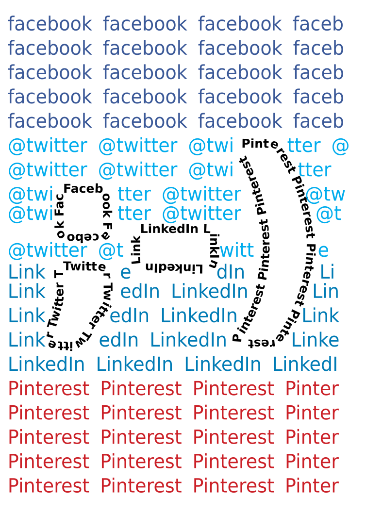

Prompt #1
Posted: October 1st, 2015
The painting in my picture is a self-portrait and so I represent myself as part of the Age of Mechanical Reproduction.
The image I created is meant to show the reproducibility of any art form, and how the aura from the original art changes. Paintings tend to convey a strong aura, or the feelings a viewer gets from an art, then other art forms. Art is used to insight various depths of understanding and with hand crafted arts this is both easier to convey and observe, for the artist is part of the work. For a photograph there is a more limited depth and so photos can cause a disconnect from the aura. Even if the photograph is of a painting the photograph looses the artist as the finer details of the painting are now gone. So when the form of art changes the original aura becomes something entirely new and that is often not a good or desired change. As Walter Benjamin stated, "What they intended and achieved was a relentless destruction of the aura of their creations, which they branded as reproductions with the very means of production." (Benjamin, 12). So as an art is constantly copied this devalues the first and destroys the aura in the original. Consider the mug with the same image of the painting it is clear that the aura has changed drastically and with the additions to the image as well the observer gets basically the opposite effect of the original aura. Consider that initially the aura might have been meant to provoke some kind of sadness toward the women in the painting, however, the mug turns the image into humorous joke making the aura that of joy not sadness. Therefore, with each reproduction, varied or not, of art changes the aura in a way that often is not what the artist intended.
Work Cited:
Benjamin, Walter. The Work of Art in the Age of Mechanical Reproduction. Germany: Hannah Arendt , 1935. Print.
Prompt #2
Posted: October 15th, 2015
Seeing is believing and that may or may not be true when it comes to content and people on social media sites. Social media sites embrace different cultures which develop around what the site offers and advertises to their users. As paraphrased by Jessie Daniels “Watkins observes that ‘the young people surveyed and spoke with are attracted to online communities that connect them to people who are like them in some notable way,’ most notably race (97)” (8). As Daniels and Watkins explain social media sites are a place for people to find people like themselves so they can express themselves as they are and not how society makes them act offline. As the image below indicates there are many different social media sites that provide ways to express yourself and each have their own communities. Facebook 's community is built around offline friends, Twitter is more built for online communities, LinkIn is for professionals in the workplace, while Pinterest is more for artistic people. As the image illustrates these communities exist both together, hidden emoji, and individually, text in the background. They work together as people using them find their communities that exists on each site. However, individually because some communities find no connection with certain sites they tend to stay on certain sites more than others. An example of this is with new artists Pinterest users may intimidate new users confidence and so they may post on Facebook or Twitter instead to avoid undesired criticisms. Though this is not actually enforced by the sites themselves the communities built around a site can cause people to feel unwelcome if they do not belong to the community. As mentioned previously by Daniels and Watkins these communities generally evolve around race or ethnicity, for example Facebook is seen as a site for 'white' internet users and Twitter for 'black'. Therefore, people come to these sites to find communities who share their race or interests so they can be free to express themselves with a lot less repressions than offline presents.
Work Cited:
Daniels, Jessie. "Race and racism in Internet studies: A review and critique." New Media Society. Sage Publications, 10 Dec. 2012. Web. 11 Oct. 2015.
Prompt #3
Posted: November 5th, 2015
Mobile devices have allowed many people throughout the world to have access to the internet. Smart phones give people access to the internet who did not have the net before. This allows people the ability to learn many things about their government and society that they may not have been able to know before. The knowledge that the internet provides helps people see problems with the world and allows them the chance to form social movements and try to make change to flaws in the world. As Laila Shereen stated "convergence of (1) a technology infrastructure consisting of the Internet, micro-blogging, Twitter, Facebook, smart phones,...; (2) physical habits such as communication habits,...; and (3) a national narrative of al-thawra that enabled the mobilization of the body politic" (248) all available forms of communication both digital and physical helps grow various social movements. For many movements they start in the physical world due mainly to some social issues. Now a days they can grow and gain power and strength through social media sites on the internet which lets them be able to find people who believe in these social movements. Utilizing these social media sites has helped cause uprisings like that in Egypt in 2011 to reach international attention making the movement grow larger then it would have been just being contained inside of Egypt. Therefore, as found in the applet below, there are many different social media platforms that people have used to communicate with people throughout the world. Smart phones having given many people internet access has given knowledge and power to help inspire and grow social movements into becoming a force that can't just be ignored.
Work Cited:
Shereen, Laila Sakr. "A Digital Humanities Approach: Text, the Internet, and the Egyptian Uprising." Middle East Critique.
Routledge, 15 Feb. 2014. Web. 1 Nov. 2015.
Prompt #3 Critique
Posted: November 22nd, 2015
- Can see binary numbers with green text and black background makes reminds you of computers.
- Anonymous messaging.
- Glow of text enhances computer feeling effect.
- Recognizes three sizes of text.
- Finds the depth in the text sizes.
- Bigger text sizes make you feel like the binary is coming toward you.
- Sees the moving images as being an offset of the original setting.
- Sees the image of a cell phone with the social media platforms and the videos.
- Thinks the video represents the camera and recording videos of protests.
- Music reminds them of India rock and college students.
- The phone exposes modern capabilities of today.
- Shows aspects of history and the binary shows how everything in the digital world.
- Recognizes that the text attached to the mouse is instructional and political "let your voice be heard".
- Thinks that there are a lot of functions to make the applet.
- Would change the text that appears by the mouse and make it disappear when you click a link.
Prompt #4
Posted: November 17th, 2015
Something that seems to be consistent with the Ultra-red assignments is that most students did not want to participate or lead. At the Ultra-red talk Learning Exodus: Education, Value, and Resistance one speaker posed questions and often there would be silent pauses until someone decided to speak or the Ultra-red speaker would change to a new subject. Some probably didn't know how to answer, and others didn't care to respond. Each person had their own reasons for not participating but the main point is that with all the people there little conversation happened. Additionally, while making the original recording for the sound walk there also was little interest for the group to lead or participate. As suggested by the audio clip the group stood waiting to see who would lead first. This silence happened again each time a new leader needed to walk, each wait shorter then the first. Hence, it seemed apparent that no one really wanted to participate or lead. In the Five Protocols for Organized Listening other students were asked to participate however some certainly had no interest, "Moving around the room if I found a group had become stuck or arrived at a proposal through little effort I turned their ideas into questions. In other instances a particularly dominant individual forced the group to follow his or her lead" (24). The lack of participation in these cases seem non biased to race, ethnicity, or geography it's about the individuals interests and motivations. In any case when students are asked to participate in something they have no interest in they will put little effort into the work. This is not to say that students do nt care about anything just that they will decide when, if at all, they will participate or lead.
Work Cited:
Blaney, Elizabeth, Manuela Bojadžijev, Pablo Garcia-Hernandez, Janna Graham, Chris Jones, Elliot Perkins, Dont Rhine,
Robert Sember,
Walt Senterfitt, Ceren Türkmen, and Leonardo Vilchis. "Five Protocols for Organized Listening." Ultra-red.
Los Angeles, 2013.
Web. 11 Nov. 2015.
Prompt #5
Posted: December 1st, 2015
So many people today, even in less developed countries, use phones especially smart phones because of their portability and their affordability (in comparison to a computer). In California we see people with phones all the time taking them out to pass the time by playing games chatting with friends or just surfing the web. At Santa Cruz whenever I wait at a bus stop I always see someone on their phone as they wait for a bus. In the past people use to only go online when they were at home because big tower computers are not very portable. And when people did go on their computers they would tend to only use them for games or occasional school work. Now everyone is on their phones doing anything from games to checking their emails to chatting with friends. As Paul Mason stated in his article “For social media has moved the 'collective mental arena', with it's intense interpersonal bonds, from the realm of gaming and fantasy into the world of everyday interaction” (134). Mason also goes on to explain how the use of the internet especially on smart phones is greatly increased over the years. As an understanding we as humans today rely very heavily on the internet for everything we do because of how simple and quick it makes everyday tasks be. With this we have accepted the internet as part of our existence and so when you see people standing around using their phones generally we now just pass that off as normal. With everyone using their phones we have brought the digital world into the real world in the sense that so many people are constantly connected to the internet. Thus, as a society we have made the interactions of the internet part of our normal everyday lives.
Work Cited:
Mason, Paul. "Why It's Kicking Off Everywhere The New Global Revolutions." Verso. Verso Books, 2012. Web. 28 Nov. 2015.
Game Made with Unity Engine
Download (downloaded files may not work on all computers): Windows or Mac